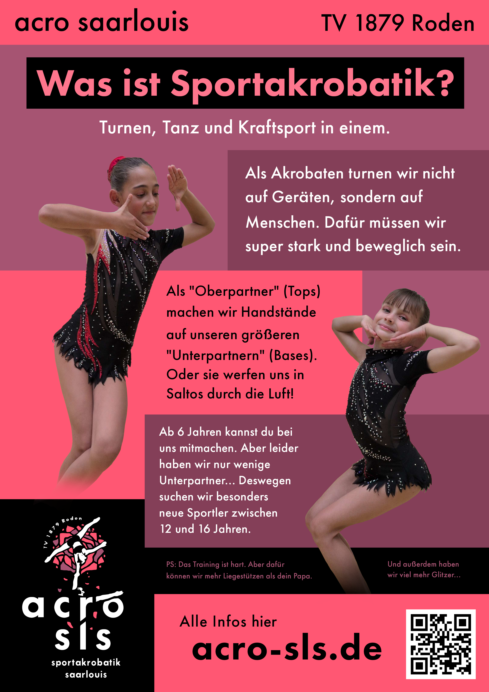

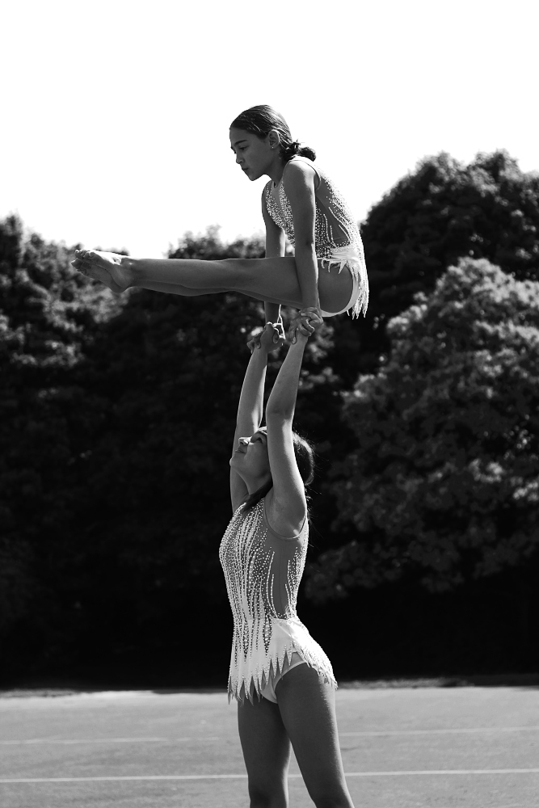
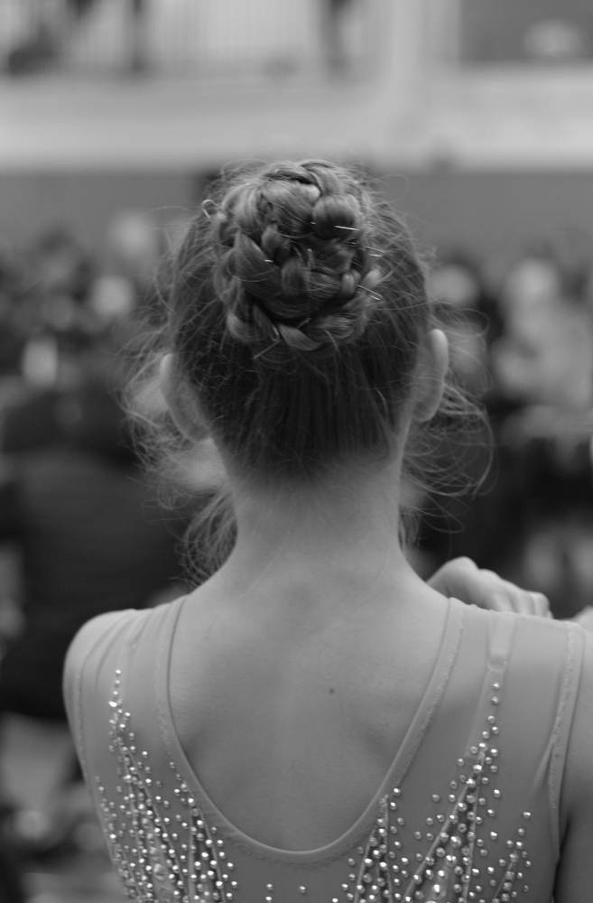
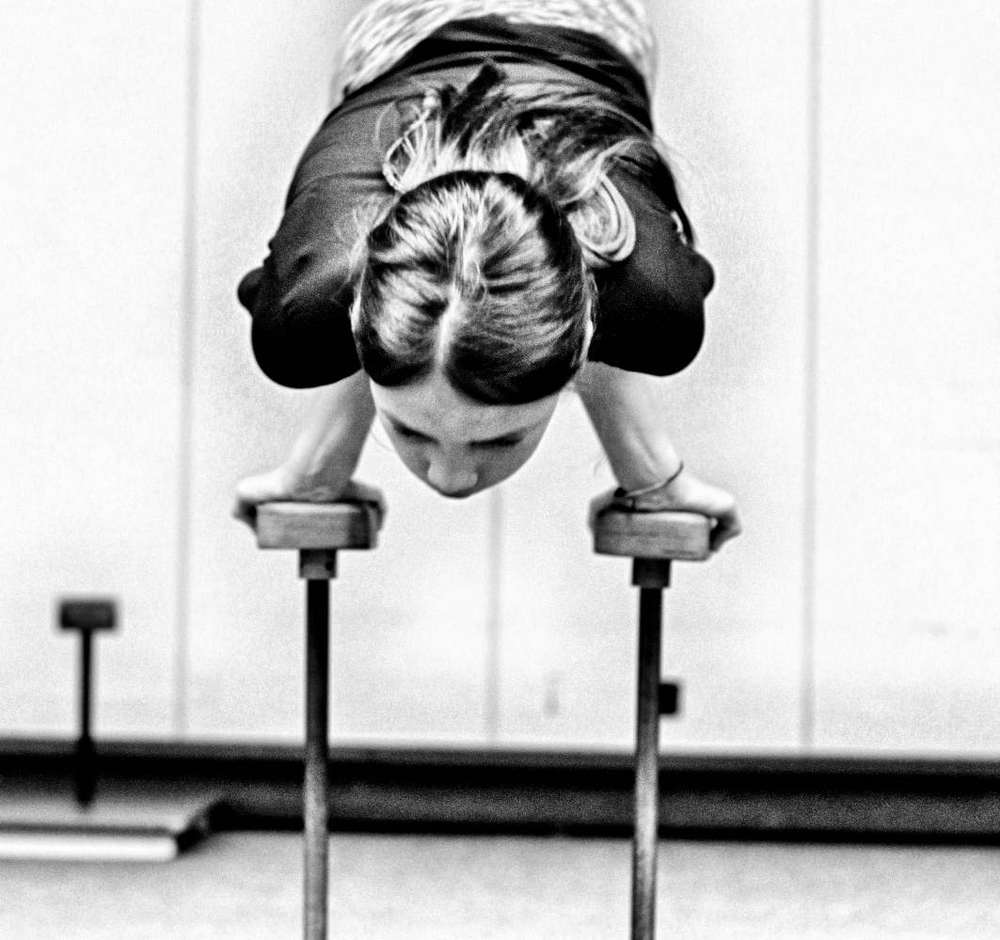
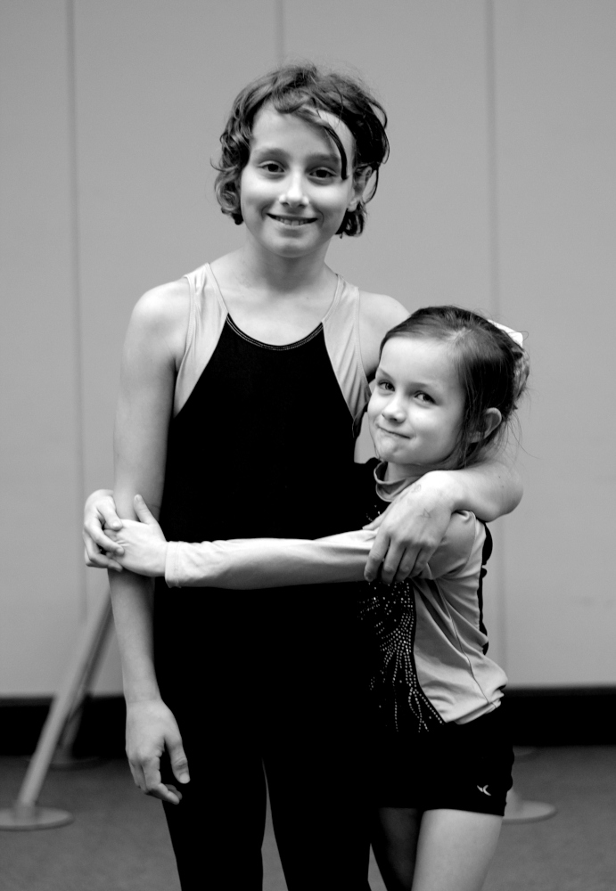
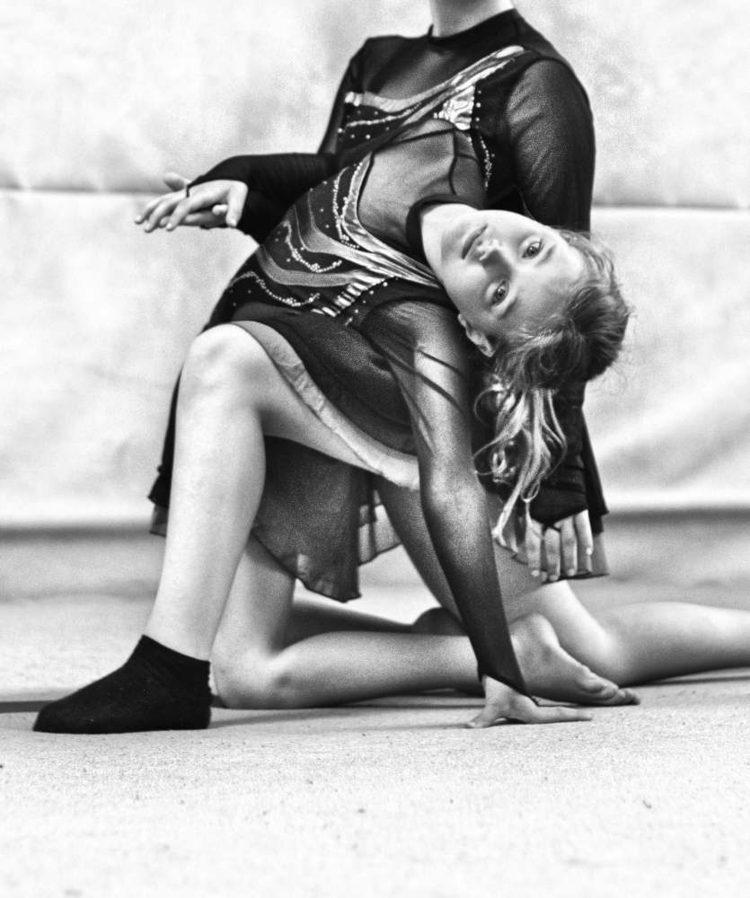
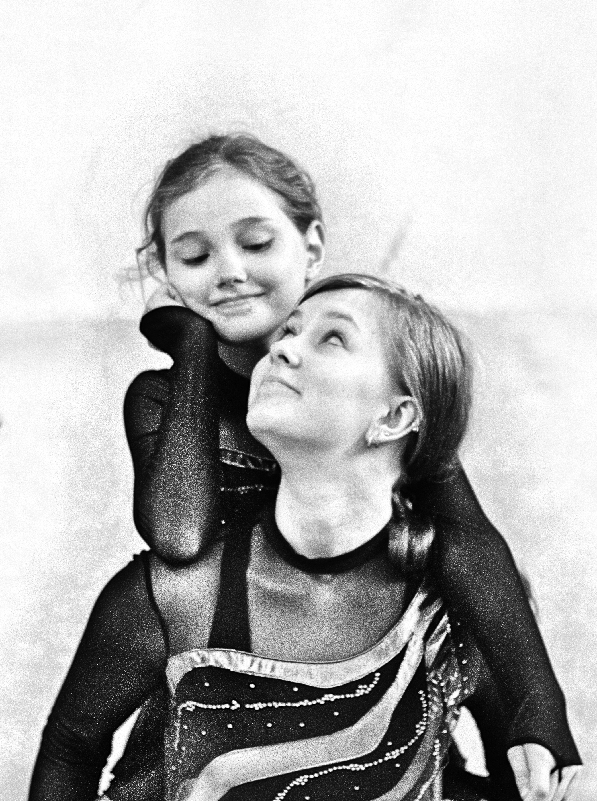
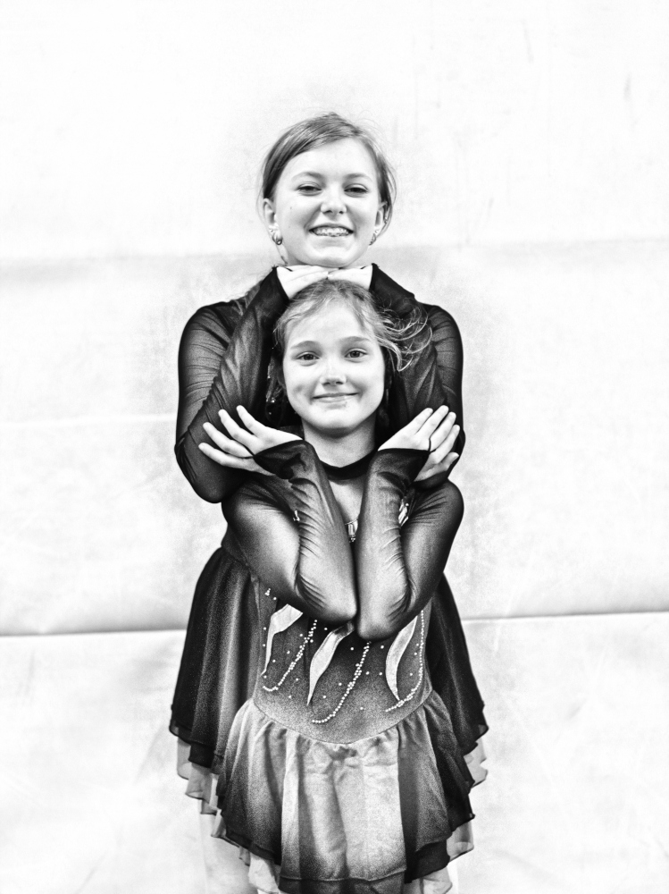
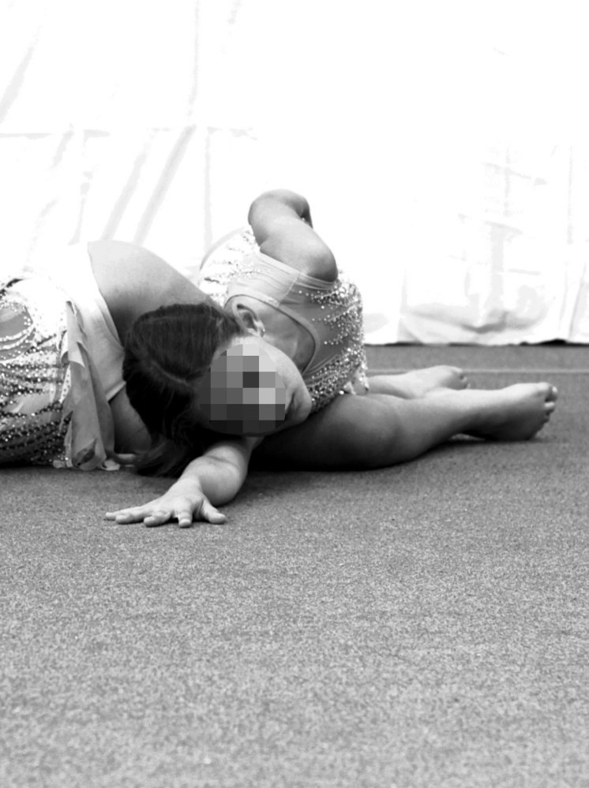
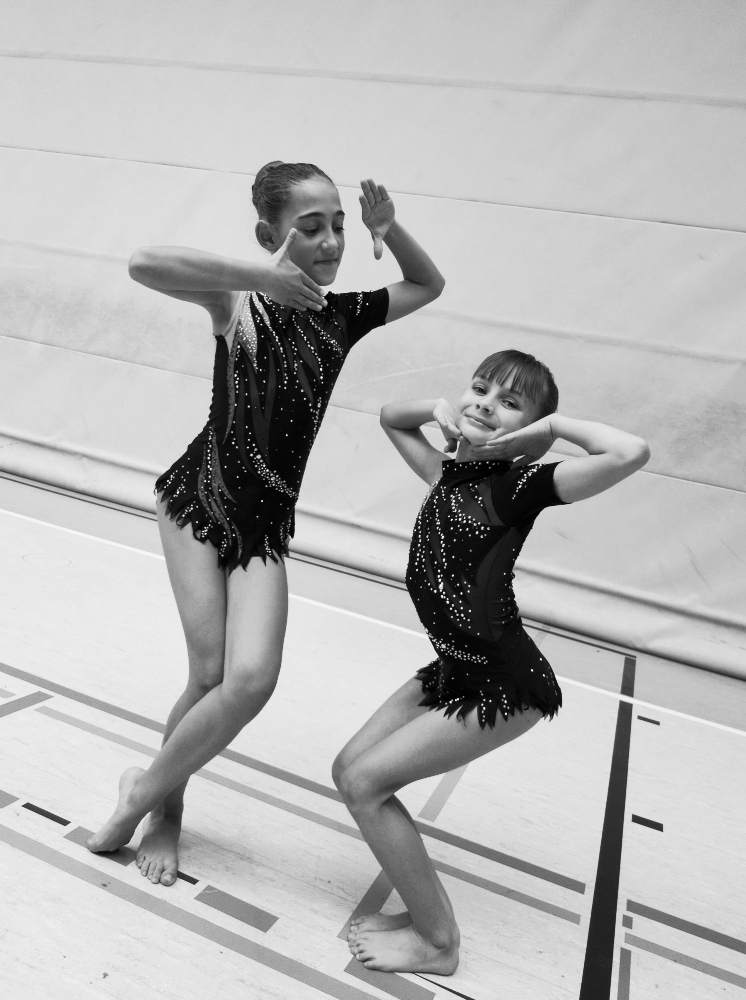
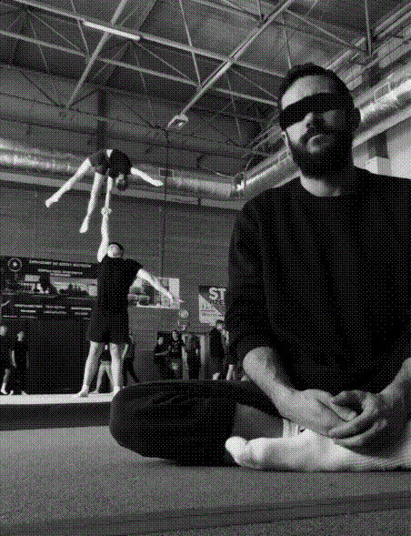
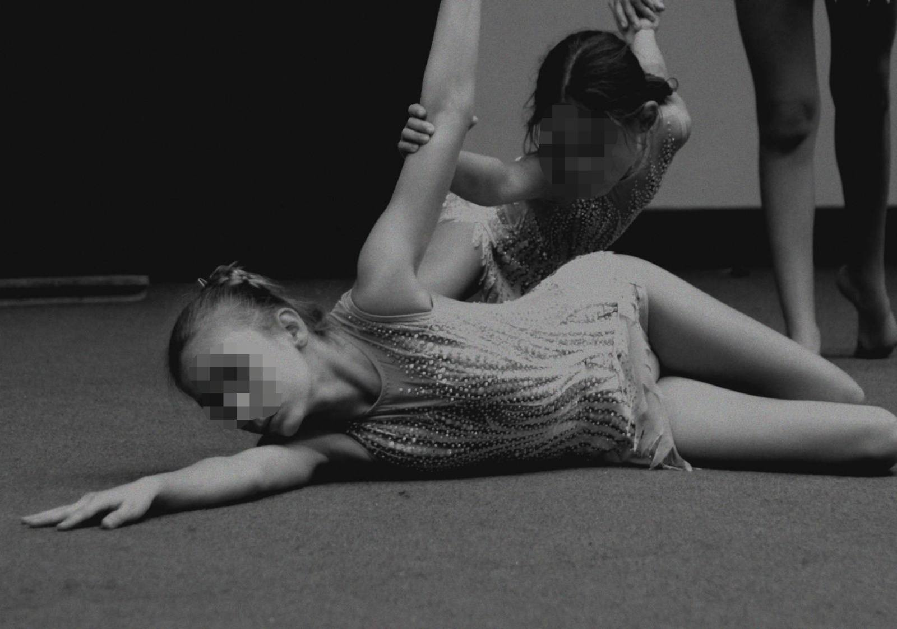
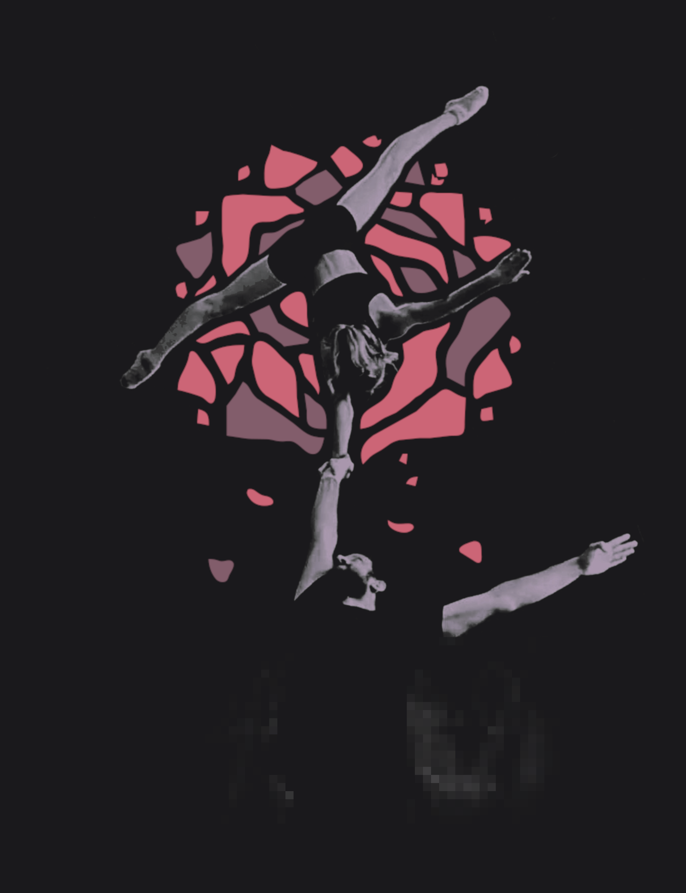
Akrobatik ist Turnen, Tanz und Kraftsport in einem. Wir turnen nicht auf Geräten, sondern auf Menschen.
Akrobatik (kurz "Acro") ist die älteste Form des Turnens. Akrobaten gab es in allen großen Kulturen der Welt. Aber im 20. Jahrhundert hat sich über die Zirkusakrobatik eine organisierte Sportart entwickelt, die Sportakrobatik.
In diesem "Akrobatikturnen" wird nicht allein auf dem Boden oder auf einem Gerät geturnt, wie im "Kunstturnen", sondern mit einem oder mehreren Partnern, die gemeinsam akrobatische Elemente vollführen. Geräte gibt es keine. Nur den menschlichen Körper in Kooperation mit anderen.











In der Sportakrobatik wird Akrobatik in einem technisch anspruchsvollen, sportlichen Kontext betrieben, auf regionalen bis hin zu internationalen Turnieren auf einer Matte von 12x12m. Bewertet wird die Schwierigkeit der akrobatischen Elemente, die Präzision der technischen Ausführung und die artistische Darstellung. Sie vereint Kraft, Beweglichkeit, Balance, Dynamik, Koordination und Kreativität. Wegen der erforderlichen Kraft und Eleganz wurde sie früher auch "Kunstkraftsport" genannt. Hier wird die "Hand zu Hand" Akrobatik mit Bodenakrobatik und choreographiertem Tanz kombiniert.
Neben der Sportakrobatik steht die Showakrobatik. In Zukunft möchten wir eine Showakrobatikgruppe aufbauen, ein Generationen übergreifendes Ensemble von Akrobaten aus Saarlouis und Umgebung, um die Technik der Sportakrobatik in Form von Showacts auf die Bühne zu bringen, die Akrobatik als Sport bekannter zu machen und ihr Potenzial im Bereich der darstellenden Kunst zu zeigen.
Langfristig soll diese Gruppe einerseits für ältere Sportler interessant sein, die nach ihrer aktiven Phase im Sport eine neue Herausforderung suchen, aber auch für Kinder, die sich für den Tanz und die Bühne mehr begeistern als für den Wettkampf. Mehr Infos folgen.
Sportakrobaten sind entweder Unter- oder Oberpartner. Ältere und kräftigere Unterpartner halten, heben, werfen und fangen die jüngeren und zierlicheren Oberpartner. Als Oberpartner suchen wir darum kleine und zierliche Mädchen und Jungen ab ca. 6 Jahren. Aktuell suchen wir besonders dringend Unterpartner: Größere und kräftigere Jugendliche ab 12 Jahren aufwärts. Ältere Jugendliche und Erwachsene sind ebenso willkommen.
Ihr solltet Spaß an Bewegung haben und gerne turnen und/oder tanzen. Eine turnerische oder tänzerische Vorerfahrung ist hilfreich, aber nicht unbedingt nötig. Wir unterrichten Akrobatik auf jedem Level und bringen euch alles von Anfang an bei. Wille und Disziplin sind wertvoller als Talent.
Bei Interesse könnt ihr immer dienstags um 16 Uhr zu einem Probetraining kommen. Wir sichten die Kinder, geben eine ehrliche Einschätzung und teilen euch mit, welche Gruppe in Frage käme. Die Gruppen sind sportbedingt altersgemischt. Das Alter ist daher kein Kriterium für die Gruppeneinteilung, sondern die eigene Trainingsbereitschaft, das Potenzial und der Leistungsstand, sowie die Kapazitäten unserer Trainer.
Unser Training ist je nach Trainingsbereitschaft und Leistungsstand in die unten stehenden Gruppen unterteilt, die teilweise parallel zwischen 1-6 mal pro Woche trainieren.
Blüten: Hier werden einmal pro Woche neue Sportler gesichtet und Kinder ab 6 Jahren (Ausnahmen ab 5) sammeln erste akrobatische Erfahrungen. Sie werden langsam an das Training herangeführt. Keine Teilnahme an Wettkämpfen. Für jüngere Kinder zwischen 3 und 5 bietet der TV Roden das Eltern-Kind-Turnen an.
| Tage | Zeiten | Ort |
|---|---|---|
| Dienstag | 16:00 - 17:15 Uhr | SLS |
Saphire: An zwei Tagen pro Woche erlernen die Sportler allgemeine Grundlagen der Sportakrobatik (mit Fokus auf Kraft, Beweglichkeit und Koordination) und sammeln erste Erfahrungen im Bezug auf ihre Rollen als Ober- oder Unterpartner.
Das Grundlagentraining muss jeder durchlaufen. Es bereitet auf das Training im Leistungssportnachwuchs vor.
Wenn der Leistungssportbereich nicht in Frage kommt, bleiben Sportler nach dem Grundlagentraining im Breitensportbereich. Unter der Voraussetzung einer regelmäßigen Teilnahme nehmen die Sportler an regionalen und überregionalen Wettkämpfen nach dem Breitensportprogramm (WKK) teil.
| Tage | Zeiten | Ort |
|---|---|---|
| Dienstag | 16:00 - 18:45 Uhr | SLS |
| Freitag | 16:00 - 18:45 Uhr | SLS |
Smaragde: Der Leistungssportnachwuchs (kurz LSN) beginnt mit drei Tagen Training pro Woche und steigert sich langsam auf vier Tage Training, die im Leistungssport mindestens notwendig sind. Um Überlastung zu vermeiden und ein sicheres Training zu ermöglichen, kann nicht parallel noch ein anderer Sport betrieben werden. Ihr Kind wird den Sport nur so ernst nehmen, wie Sie es tun.
Die Sportler werden von ausgebildeten Trainern, im Rahmen einer freiwilligen, gegenseitigen Verpflichtung, schrittweise und altersgemäß an die steigende Trainingsfrequenz und Belastung herangeführt und werden sowohl in ihrer sportlichen als auch in ihrer persönlichen Entwicklung individuell gefördert und sehr spezifisch auf ihre Rollen als Ober- oder Unterpartner vorbereitet.
Wettkampfprogramme: KFL, Aspire, 8-16 (Jugend) auf regionalem, überregionalem oder auch auf nationalem Level.
| Tage | Zeiten | Ort |
|---|---|---|
| Dienstag | 16:00 - 19:10 Uhr | SLS |
| Donnerstag | 17:30 - 20:00 Uhr | Schwalbach |
| Freitag | 15:30 - 18:45 Uhr | SLS |
| Samstag | 09:00 - 13:00 Uhr | SLS |
Rubine: Sportler mit der Ambition auf professionelle Akrobatik steigern das Training von vier auf bis zu sechs Tage pro Woche, um sich auf einen Einsatz auf (inter)nationalem Level in der Klasse der Junioren oder Senioren vorzubereiten oder trainieren gemeinsam im Rahmen ihrer Arbeit als Artisten.
Athleten auf diesem Level sind so weit ausgebildet, dass sie weitgehend selbständig trainieren und sich gegenseitig helfen können. Training und Trainingszeiten werden individuell abgestimmt.
| Tage | Zeiten | Ort |
|---|---|---|
| Montag | 16:00 - 19:00 Uhr | SB |
| Dienstag | 15:30 - 19:10 Uhr | SLS |
| Mittwoch | 16:00 - 19:00 Uhr | SB |
| Donnerstag | 17:00 - 20:00 Uhr | Schwalbach |
| Freitag | 15:30 - 18:45 Uhr | SLS |
| Samstag | 09:00 - 13:00 Uhr | SLS |
Unsere Trainer haben mindestens eine Leistungssport C oder B-Lizenz des Deutschen Sportakrobatikbundes (DSAB) und teilweise einen sozialpädagogischen Hintergrund.
Manfred hat 20 Jahre aktive Erfahrung als Trainer, war als Athlet im Bundeskader unter Emil ("Micky") Novkov (Bundestrainer) und hat auf internationalem Level geturnt (Europa- und Weltmeisterschaften).
Florian hat 8 Jahre aktive Erfahrung als Trainer, ist seit 10 Jahren aktiv und hat von Galina Sinyavskaya vom ukrainischen Nationalteam gelernt.
Zur Verstärkung unseres Teams suchen wir aktuell neue Trainer, Hilfstrainer (keine Vorkenntnisse nötig) und Choreographen.
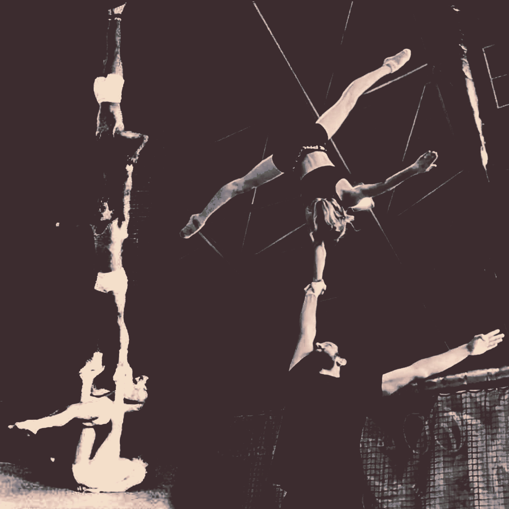
Ansprechpartner
Simone Lehnert
Telefon
06831 / 880844
Email
sportakrobatik@tv1879roden.de
Adresse
Schulturnhalle Römerberg
Hochstraße 41 (hinter Kulturhalle)
66740 Saarlouis-Roden